pairs by tunnelling through the gap
pairs by tunnelling through the gap  V/m; integrating out the electron loop gives the Euler–Heisenberg Lagrangian, which makes the vacuum a nonlinear, birefringent medium.
V/m; integrating out the electron loop gives the Euler–Heisenberg Lagrangian, which makes the vacuum a nonlinear, birefringent medium.
Schwinger pair creation (WKB estimate)
The vacuum is a filled Dirac sea separated by from the positive continuum (Schwinger 1951). In a field the two continua are tilted: an electron must tunnel a distance
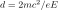
. The WKB exponent (see tunnelling) with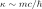
gives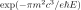
. Exact (Schwinger 1951):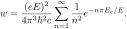
Supercritical atoms
For the Dirac Coulomb problem the  level dives into the negative continuum at
level dives into the negative continuum at
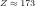
(finite nuclear size). An empty state then decays by spontaneous positron emission: the vacuum becomes charged. Heavy-ion collisions (U+U, 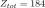
) were designed to test it.Euler–Heisenberg Lagrangian
For slowly varying fields below  (Sauter 1931; Heisenberg and Euler 1936):
(Sauter 1931; Heisenberg and Euler 1936):
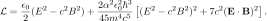
 (
(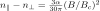
,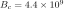
T).Worked example
The best lasers reach
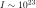
W/cm :
: 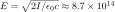
V/m, so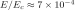
and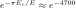
: no pairs. Experiments instead collide GeV electrons with the laser: in the electron frame the field is boosted by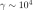
, reaching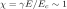
.Engineering applications
High-power laser facility design (ELI, XFEL), magnetar physics, the Zener breakdown of semiconductor diodes is the solid-state analogue (tunnelling across  in a strong field, see diodes).
in a strong field, see diodes).
Pitfall
The rate is non-perturbative in  (
(
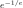
): no finite order of Feynman diagrams reproduces it.